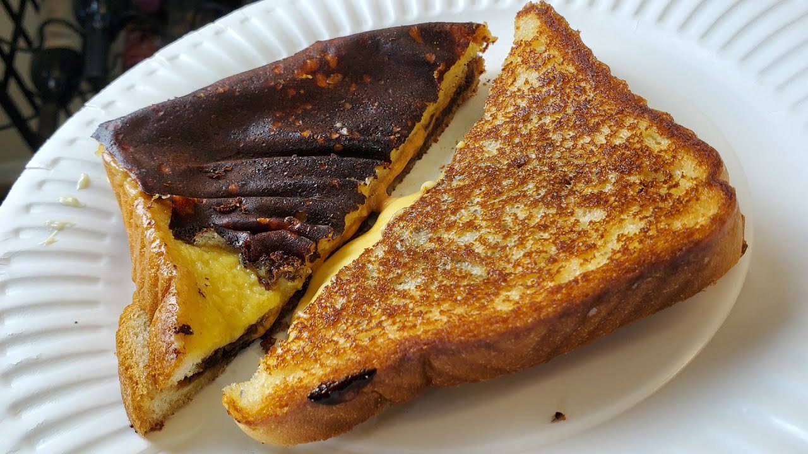

Rum Ham

Description:
The gang dreams up some disgusting, heavily alcoholic dishes and drinks in the irreverent multiple-people-shouting-at-once-comedy, It's Always Sunny in Philadelphia.
Ingredients:
- 1 Large Ham
- Brown Sugar
- Black Pepper
- Salt
- 1/2 Tbsp butter
- 1/2 cup pineapple
- 1/2 cup rum
Steps:
- Score the ham.
- Combine 2 cups of brown sugar, ½ cup of salt and ⅓ cup of ground pepper in a bowl.
- Rub the ham liberally with brown sugar mixture and place in a 350°F oven for an hour and a half.
- Caramelize the Pineapple in a skillet with the butter.
- Turn the skillet up to high heat, add the half cup of rum and flambe until all of the alcohol cooks off.
- Once the ham is ready, plate and serve with pineapple rum sauce and enjoy.
Return Home